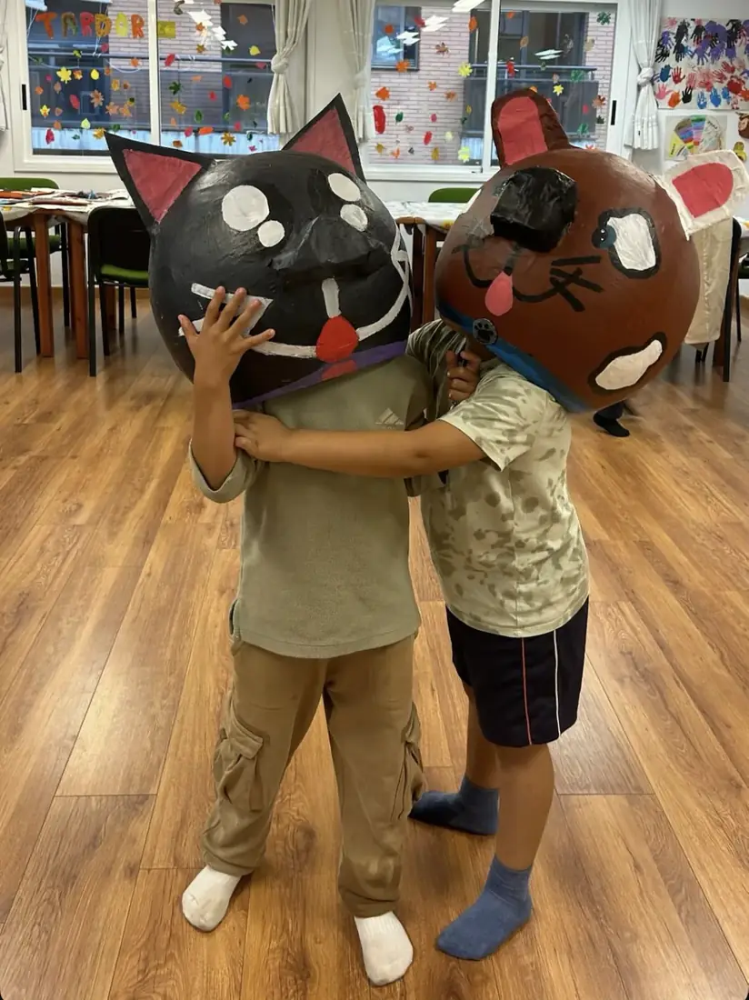

Espai Petit Lleure
Un espacio donde niños y adolescentes aprenden, juegan, se relacionan y ganan autonomía, con el acompañamiento cercano de las familias.

El juego como manera de aprender
Combinamos educación, creatividad, movimiento y vida comunitaria para que cada niño descubra sus capacidades, construya relaciones y gane confianza.
- Aprender haciendo
- Ganar autonomía
- Crear vínculos positivos
- Expresarse y participar
Tres programas a lo largo del año

Club de ocio del curso
Un espacio fuera del horario escolar para ganar autonomía, convivir, crear y trabajar la educación emocional.
Ver el proyecto
Club de ocio de verano
Juegos, talleres, deporte, salidas y actividades de descubrimiento durante las vacaciones de verano.
Ver el proyecto
Club de ocio de Navidad
Talleres, manualidades, música, cuentos y juegos cooperativos durante las fiestas.
Ver el proyectoQué hacemos en el Espacio

Las familias, parte del proyecto
- Comunicación abierta y cercana
- Acompañamiento educativo
- Participación activa
- Apoyo a la conciliación familiar, laboral y de estudios
Atendemos a niños, adolescentes y familias, con un apoyo especial para quien lo necesita, y nos coordinamos con escuelas, servicios sociales, administraciones y entidades cuando hace falta.
Grupos y apoyo escolar
Dos grupos por edades y talleres para acompañar los deberes y el estudio.
Oddie y Andy, las mascotas del esplai
Las han creado los propios niños con papel maché, paso a paso, durante el esplai de verano.
¿Quieres apuntar a tu hijo o hija?
Las plazas e inscripciones dependen de cada programa y del momento del año. Escríbenos y te informaremos.